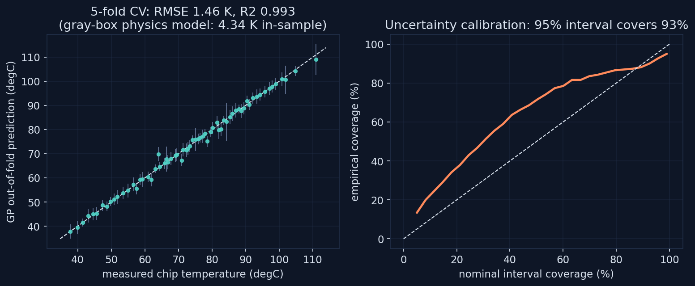
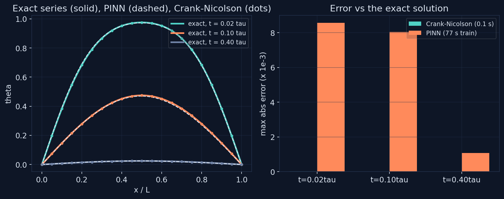
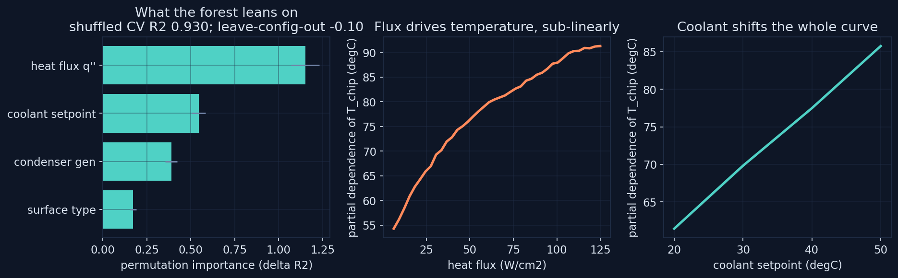

92.7%
95% INTERVAL COVERAGE
Three studies on the theme this whole site keeps returning to: a model is worth exactly its evaluation. Two of the three run on the real 261-point experimental dataset from the boiling chamber; the third pits a PINN against sixty-year-old numerics and reports who won.
A Gaussian process trained on the real 261-point dataset, heat flux, coolant setpoint, condenser generation, surface type, predicting chip temperature, and evaluated entirely out-of-fold: 5-fold CV RMSE of 1.46 K with R-squared 0.993. That beats the gray-box physics model's 4.34 K, and the page says why that comparison is unfair in both directions: the GP interpolates a fixed apparatus brilliantly and extrapolates nowhere, while the physics model explains and transfers. The second panel asks whether the GP's error bars mean anything: a claimed 95% interval covers 92.7% empirically, slightly overconfident and reported as such.

5-fold CV: RMSE 1.46 K, MAE 0.87 K, R2 0.993; empirical coverage of 95% intervals: 92.7%
One-dimensional transient conduction with the effective diffusivity tuned in the cardiac bioheat validation, solved three ways: exact Fourier series, Crank-Nicolson, and a physics-informed neural network trained on the PDE residual with hard-encoded boundary conditions. The verdict is unambiguous: CN reaches 2.4e-5 max error in 0.1 seconds; the PINN reaches 8.6e-3 after 77 seconds of training. For a clean forward problem on a rectangle, classical numerics wins by more than two orders of magnitude, and the lab says so, because PINNs earn their keep on inverse problems and irregular domains, not here.

PINN worst max-error 8.6e-3 (77 s train, CPU); Crank-Nicolson 2.4e-5 (0.1 s); alpha = 1.447e-7 m2/s from the bioheat validation
A random forest on the same 261 points, interrogated with permutation importance and partial dependence: heat flux dominates, coolant setpoint second, condenser generation third, surface type fourth, exactly the physics ordering. The kept-in lesson: the first run used unshuffled folds on a configuration-ordered CSV and scored R-squared of zero. The final lab reports both numbers on purpose: shuffled CV 0.930 for interpolation, leave-one-configuration-out negative 0.10 for extrapolation. Interpolation is easy; a new configuration is not, which is precisely why the physics model exists.

shuffled 5-fold R2 0.930 +/- 0.013; leave-config-out R2 -0.10 +/- 0.45; importance: q'' 1.15, coolant 0.55, generation 0.39, surface 0.17